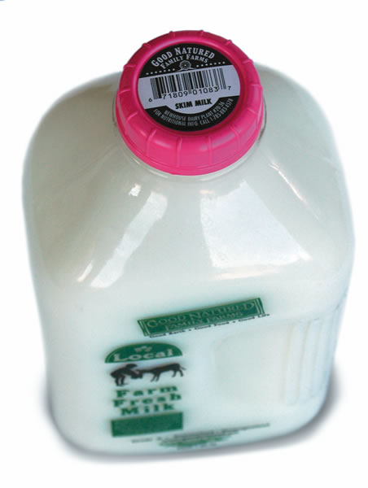
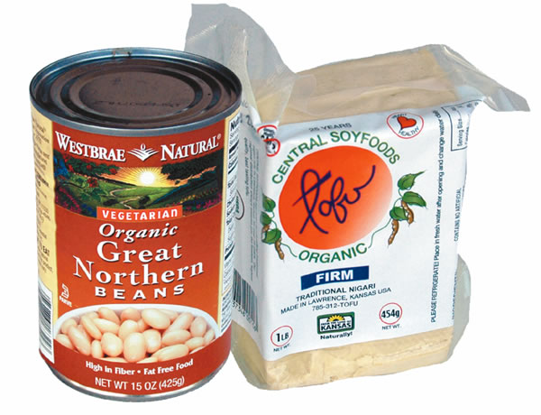
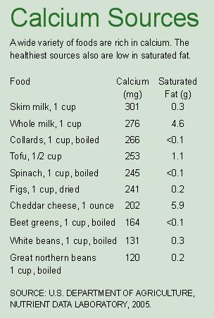
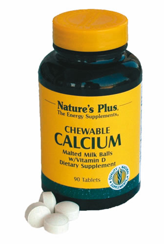

You've seen the advertisements celebrities and public figures from all walks of life, each sporting a gleaming white milk mustache. The ads are supposed to make you aware of the dangers of not getting enough calcium, while urging you to drink three glasses of milk a day.
I hope you can resist the allure of this slick but misleading campaign, sponsored by the U.S. dairy industry. Theres no question that calcium is an essential part of a healthy diet, but other major questions have yet to be answered, among them the question of how much calcium we really need every day.
In the United States, the official current recommended intakes are 1,000 milligrams a day for ages 19 to 50, and 1,200 milligrams a day for ages 50 and older. The latest Dietary Guidelines for Americans and the new U.S. Department of Agriculture food pyramid say we should get much of that calcium from three daily servings of milk, cheese, yogurt or other dairy products. However, theres no solid evidence that merely increasing the amount of milk in your diet will protect you from breaking a hip or crushing a backbone in later years.
Milk is clearly the most efficient way to get calcium from food, since it delivers about 300 milligrams per 8-ounce glass. Few other foods come close to packing in that much calcium. But milk delivers more than just calcium, and some of its other components such as extra calories, saturated fat and the sugar known as galactose arent necessarily good for you.
The main reason for all the concern about too little calcium is the frightful prospect of osteoporosis, the gradual and insidious loss of bone that often comes with old age. Each year, osteoporosis leads to more than 1.5 million fractures, including 300,000 broken hips. Osteoporosis is usually portrayed as a womens disease, but it also affects men. Men enter adulthood with stronger, denser bones than women, and they never face the sudden, bone-draining loss of estrogen that occurs with menopause. This gives them a five- to 10-year hedge against osteoporosis over women, but not lifetime protection. Unfortunately, theres little proof that just boosting your calcium intake to the high levels that are currently recommended will prevent fractures. And all the high-profile attention given to calcium is distracting us from strategies that really work such as exercise, medications and vitamins and, for women, hormone replacement therapy.
Dairy products shouldnt occupy the prominent place that they do in the U.S. Department of Agriculture food pyramid, and they shouldnt be the centerpiece of the national strategy to prevent osteoporosis. Instead, the evidence shows that dietary calcium should come from a variety of sources and, if more calcium is really needed, from cheap, no-calorie, easy-to-take supplements. Consider dairy products as an optional part of a healthy diet and have them in moderation, if at all.
About 99 percent of your bodys calcium is locked in bone. The rest is dissolved in your blood and the fluid inside and outside cells, where it helps conduct nerve impulses, regulate your heartbeat and control other cell functions. Although you would never know it from the milk-mustache advertisements, no one really knows the healthiest, safest amount of dietary calcium. Different scientific approaches yield different estimates.
Daily calcium requirements are traditionally calculated using a balance study. This is a relatively straightforward test you assemble a group of volunteers, put them on a diet of supplements containing different amounts of calcium for a few days or a few weeks, then measure the amount of calcium they excrete. Balance studies show that about 550 milligrams of calcium a day is an optimal level for the mythical average adult. Another route to estimate daily calcium requirements is called the maximal retention study. This approach, which was also used to help set the current recommendations, tries to determine the highest amount of calcium that the body (mainly the bones) can grab and hold on to. Yet another piece of evidence comes from measurements of bone density using X-rays before and after a year or so of calcium supplementation. All of these types of studies were used by the expert panel that set the current target recommendations for calcium intake. What these short-term studies fail to capture is the bodys remarkable capacity to adapt. A unique study of Scandinavian prisoners, all men, showed that their bodies were still adapting after several years on a lower-calcium diet (500 milligrams a day), mainly by excreting less calcium and using calcium more efficiently. In real life, broken bones are a better test of desirable calcium levels than the short-term flow of calcium in and out of the body or measurements of bone density. Studies comparing people who have broken their hips or wrists because of osteoporosis with people who havent broken bones have yielded mixed results. More importantly, the results from seven studies done in the United States, England and Sweden that followed large groups of people for long periods didnt show any important reduction in risk of broken bones with increased calcium intake.
If no one really knows the best daily calcium target, then why not play it safe and boost your calcium by drinking three glasses of milk a day? Here are a few good reasons:
Lactose intolerance. All babies are born with the ability to digest milk. Some people, especially those of northern European ancestry, keep this trait for life. Most children, though, gradually lose this ability as their bodies stop making an enzyme called lactase that breaks down milk sugar (lactose). In fact, only about a quarter of the worlds adults can fully digest milk. In the United States, as many as 50 million adults arent equipped to digest milk. Half of Hispanic-Americans, 75 percent of African-Americans and more than 90 percent of Asian-Americans cant tolerate a lot of lactose. For them, drinking a glass of milk can have unpleasant consequences, such as nausea, bloating, cramps and diarrhea.
Saturated fat. An 8-ounce glass of whole milk contains nearly 5 grams of saturated fat; 20 grams is the recommended daily limit. Drinking three glasses a day would be the equivalent of eating 12 strips of bacon. If you enjoy milk, low-fat and skim are better choices than whole milk.
Extra calories. Three glasses of whole milk a day add 450 calories to your diet about one-quarter of your daily intake allowance. Low-fat milk, at 330 calories, adds a bit fewer, but still a lot if the main goal is to get more calcium.
Prostate cancer. A diet high in dairy products has been implicated as a risk factor for prostate cancer. In nine separate studies, the strongest and most consistent dietary factor linked with prostate cancer was high consumption of milk or dairy products. In the largest of these??the Health Professionals Follow-up Study conducted by the Harvard School of Public Health??men who drank two or more glasses of milk a day were almost twice as likely to develop advanced or metastatic (spreading) prostate cancer as those who didnt drink milk at all. To be on the safe side, men should try to keep their daily calcium intake below 1,000 milligrams.
Ovarian cancer. About 15 years ago, Harvard Medical School researchers suggested that high levels of galactose, a simple sugar released by the digestion of lactose in milk, could damage the ovary and possibly lead to ovarian cancer. Since then a number of studies have tested this hypothesis. While the evidence isnt conclusive, I think that a positive link between galactose and ovarian cancer shows up too many times to ignore the possibility that it may be harmful.
How much calcium we need is one of the major unsettled issues in human nutrition. It is clear that active, healthy people who get only low to moderate amounts of calcium can have low rates of bone fractures. Whether getting more calcium will further lower this risk is an open question. A reasonable strategy for women is to try to get an extra 500 to 1,000 milligrams of calcium a day in middle age, in addition to their normal diet. (The typical diet provides about 300 milligrams, without dairy.) Calcium supplements with vitamin D are the best way to do this. Low-fat dairy is an alternative for those who really like milk. For men, the balance of benefits and risks tips against a lot of extra calcium. There are three things almost everyone can do to reduce the chances of developing osteoporosis:
Be as physically active as possible. Cells inside bone sense physical strain or stress and orchestrate a silent symphony of activity to make your bones stronger and more dense. The more healthy stress on bones, the more bone is built.
Get enough vitamin K. This vitamin plays one or more roles in the regulation of calcium and the formation and stabilization of bone, so too little vitamin K may help set the stage for osteoporosis. Eat at least one serving of green leafy vegetables a day, such as dark green lettuce, broccoli, spinach, Brussels sprouts or kale.
Take a multivitamin that contains vitamin D. This vitamin helps the body absorb calcium and plays an important role in maintaining bone density. A recent study showed that a vitamin D deficiency was much more common among women who had broken a hip than women who had not. Although the evidence isnt totally consistent, extra vitamin D may be an effective way to prevent bone loss. For most people, the easiest way to do this is to take a standard multivitamin supplement.
During and after menopause, women should talk with a trusted health care provider about hormone replacement therapy, one benefit of which is to reduce the risk of osteoporosis. The decision to begin hormone replacement therapy isnt something to take lightly. This is a complicated issue with rapidly changing options. Hormone replacement therapy definitely has clear benefits but also carries some risks. This discussion should focus on weighing the benefits against the risks, because they are different for each individual.
Walter C. Willett, M.D., is chair of the Department of Nutrition at the Harvard School of Public Health and a professor of medicine at the Harvard Medical School.
|
 MATTHEW T. STALLBAUMER Milk is just one way to get calcium. If you drink it,choose skim, which has just 0.3 grams of saturated fat in each cup. |
 MATTHEW T. STALLBAUMER Good food sources of calcium include great northern beans, tofu and leafy greens. |
 PHOTODISC Hiking and other outdoor exercise is beneficial to your bones in two ways: Regular exercise builds bone density while exposure to sunlight allows your skin to synthesize vitamin D, which helps your body absorb calcium. |
|
MATTHEW T. STALLBAUMER |
MATTHEW T. STALLBAUMER |
 |